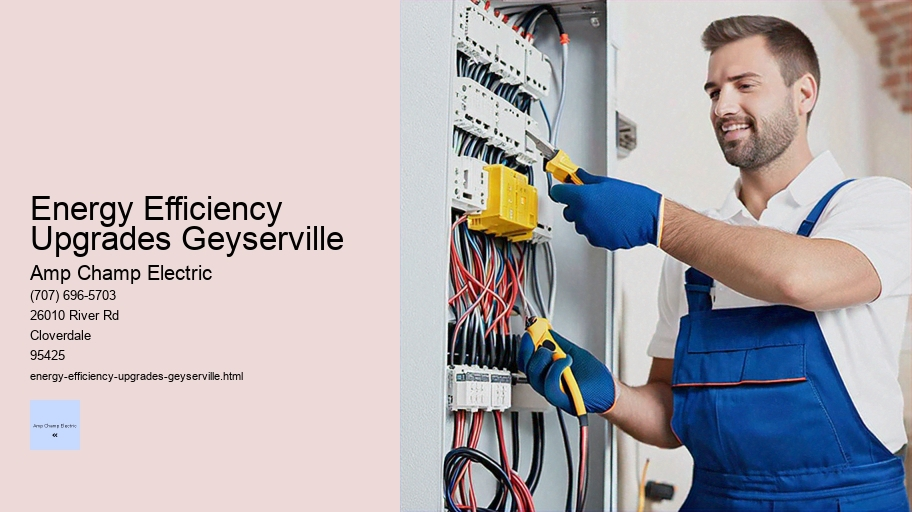

News
Electrical Installation Healdsburg
Electrical Installation Healdsburg
Electrical Installation Santa Rosa
Electrical Installation Cloverdale
Electrical Installation Geyserville
Electrical Installation Windsor
Maintenance and Repair Services Healdsburg
Maintenance and Repair Services Healdsburg
Maintenance and Repair Services Santa Rosa
Maintenance and Repair Services Cloverdale
Maintenance and Repair Services Geyserville
Maintenance and Repair Services Windsor
Electrical Safety Inspections Healdsburg
Electrical Safety Inspections Healdsburg
Electrical Safety Inspections Santa Rosa
Electrical Safety Inspections Cloverdale
Electrical Safety Inspections Geyserville
Electrical Safety Inspections Windsor
Energy Efficiency Upgrades Healdsburg
Energy Efficiency Upgrades Healdsburg
Energy Efficiency Upgrades Santa Rosa
Energy Efficiency Upgrades Cloverdale
Energy Efficiency Upgrades Geyserville
Energy Efficiency Upgrades Windsor
Specialty Electrical Services Healdsburg
Specialty Electrical Services Healdsburg
Specialty Electrical Services Santa Rosa
Specialty Electrical Services Cloverdale
Specialty Electrical Services Geyserville
Specialty Electrical Services Windsor
About Us
Contact Us

Energy Efficiency Upgrades Geyserville
Solar Power Systems
Energy Efficiency Upgrades: A Path to a Sustainable Future
In an era where the conservation of resources and sustainability are at the forefront of global discourse, energy efficiency upgrades have become more than just a passing trend; they are imperative for both ecological balance and economic prosperity. These upgrades encompass a wide array of measures designed to reduce energy consumption in buildings, appliances, and industrial processes without compromising on comfort or productivity. This essay delves into the significance of energy efficiency improvements, their benefits, challenges, and the transformative potential they hold for our future.
The Significance of Energy Efficiency
Energy efficiency is often described as the 'low-hanging fruit' of climate change mitigation strategies. It represents an immediate and effective means to reduce greenhouse gas emissions by lowering the demand for energy production from fossil fuels. Moreover, improving energy efficiency is synonymous with enhancing performance—whether it's a building that retains heat better or an appliance that does more work with less electricity.
Upgrading to More Efficient Technology
One of the most tangible forms of energy efficiency upgrades is seen in household appliances such as refrigerators, washing machines, HVAC systems (Heating, Ventilation, and Air Conditioning), and lighting fixtures. The introduction of ENERGY STAR-rated products has made it easier for consumers to identify and purchase appliances that meet strict energy performance criteria set by government agencies such as the U.S Environmental Protection Agency (EPA).
Building Retrofits
Buildings – whether residential or commercial – are significant contributors to global energy use. Retrofitting existing structures with insulation enhancements, high-efficiency windows, advanced heating systems, or cool roofing materials can dramatically cut down on wasted energy. Smart thermostats and automation systems further contribute by optimizing temperature control based on occupancy patterns.
Industrial Upgrades
On an industrial scale, equipment modernization plays a critical role in reducing consumption.
Energy Efficiency Upgrades Geyserville - Electrical Project Management
Appliance Wiring
Photovoltaic Systems Installation
Electrical Safety Equipment
Electrical Unions
Outdoor Lighting
High-efficiency motors, improved process controls, waste heat recovery systems—all these technologies can significantly pare down industrial facilities' environmental footprint while also saving costs over time due to reduced utility bills.
Benefits Beyond Energy Savings
The advantages of embracing energy efficiency go beyond mere savings on utility bills or environmental protection—it includes job creation in retrofitting industries and technology development sectors. Health benefits emerge from better air quality due to lower emissions from power plants. On a macroeconomic level, boosting energy efficiency can lead to greater competitiveness as businesses operate more cost-effectively.
Challenges Along The Way
Despite its apparent virtues, widespread adoption faces hurdles such as upfront investment costs which may be prohibitive for some homeowners or small businesses. Misinformation about actual savings coupled with inertia against changing long-standing habits poses additional barriers.
Policy Drives Progress
Government policies play a crucial role in promoting energy efficiency through incentives like tax credits or rebates for upgrades or establishing minimum standards for new constructions' thermal performances.
Appliance Wiring
International agreements like the Paris Climate Accord push countries towards ambitious targets partly achievable through enhanced efficiency measures.
Conclusion: A Commitment We Must Uphold
Undoubtedly there is still much ground to cover if we aim to fully harness the potential offered by energy-efficient technologies but what remains clear is that every upgrade counts—the cumulative effect of individuals making smarter choices can ripple outwards leading us closer towards sustainable living standards across our communities globally.
As stewards of this planet we must embrace our responsibility—not just because it's economically sensible but because adopting efficient practices stands at heart ethical choice towards ensuring healthier resilient environment future generations inherit world where progress doesn't come expense planet sustains us all.
LED Lighting Upgrades and Retrofits: A Pathway to Energy Efficiency and Sustainability
In the modern era, where energy efficiency and sustainability are not just buzzwords but imperatives, LED lighting upgrades and retrofits stand out as beacons of progress. The transition from traditional incandescent, halogen or fluorescent lighting to Light Emitting Diodes (LEDs) represents a significant leap forward in our collective efforts to conserve energy, reduce carbon footprints, and embrace cost-effective solutions.
To understand the impact of LED lighting upgrades and retrofits, we must first delve into what exactly these terms mean. An 'upgrade' typically refers to replacing old technology with new within existing fixtures; for example, swapping out an old incandescent bulb for an LED one. 'Retrofitting,' on the other hand, often involves modifying or replacing entire fixtures to accommodate the new technology. Both processes aim at improving energy efficiency and enhancing performance.
Why Upgrade to LEDs?
The benefits of upgrading to LEDs are multifaceted. Firstly, LEDs consume significantly less power than their predecessors – approximately 75% less than incandescent bulbs and about 50% less than fluorescents. This drastic reduction in energy use immediately translates into lower utility bills. Furthermore, LEDs have remarkably long lifespans – often lasting up to 25 times longer than incandescent lights – which reduces both maintenance costs over time and waste associated with frequent replacements.
Environmental Benefits
From an environmental perspective, LED lights offer several advantages. They help reduce greenhouse gas emissions due to lower electricity consumption from power plants that still rely on fossil fuels. Additionally, unlike fluorescent lamps that contain mercury—a hazardous material—LEDs do not pose risks related to toxic materials handling or disposal.
Enhanced Lighting Quality
Beyond savings and environmental concerns lies another compelling reason for retrofitting with LEDs: improved lighting quality. LEDs provide superior light distribution with better color accuracy compared to traditional lighting options. This means spaces can be illuminated more effectively while reducing glare or uneven light patterns that contribute to eye strain.
Electrical Contracting
Adaptability & Smart Features
Modern LED systems also bring adaptability through dimming capabilities and integration with smart building management systems that allow users greater control over their environment's illumination levels—often via smartphone apps or automated settings based on occupancy sensors or natural daylight availability.
Overcoming Retrofit Challenges
Despite the clear advantages of LED upgrades and retrofits, challenges remain primarily centered around initial investment costs—the upfront price tag can deter some businesses or homeowners despite the promise of future savings. Moreover, compatibility issues may arise when installing LEDs in older infrastructure designed for different technologies; however advances in retrofit kits have made it easier than ever before.
Government incentives such as tax credits or rebates have been instrumental in offsetting these initial expenses making the switch more accessible financially while encouraging wider adoption across various sectors including residential homes commercial buildings streetlights among others.
Conclusion
In conclusion embracing LED lighting upgrades retrofits is akin stepping onto pathway toward brighter sustainable future While there may be hurdles navigate rewards terms monetary savings enhanced quality life ecological preservation immense With continuous improvements technological advancements this path only become clearer enticing us all move forward together towards greener smarter world illuminated by efficient sustainable light sources like never before
electrical-installation-healdsburg.html
electrical-installation-santa-rosa.html
electrical-installation-cloverdale.html
electrical-installation-geyserville.html
electrical-installation-windsor.html
maintenance-and-repair-services-healdsburg.html
maintenance-and-repair-services-santa-rosa.html
maintenance-and-repair-services-cloverdale.html
maintenance-and-repair-services-geyserville.html
maintenance-and-repair-services-windsor.html
electrical-safety-inspections-healdsburg.html
electrical-safety-inspections-santa-rosa.html
electrical-safety-inspections-cloverdale.html
electrical-safety-inspections-geyserville.html
electrical-safety-inspections-windsor.html
energy-efficiency-upgrades-healdsburg.html
energy-efficiency-upgrades-santa-rosa.html
energy-efficiency-upgrades-cloverdale.html
energy-efficiency-upgrades-geyserville.html
energy-efficiency-upgrades-windsor.html
specialty-electrical-services-healdsburg.html
specialty-electrical-services-santa-rosa.html
specialty-electrical-services-cloverdale.html
specialty-electrical-services-geyserville.html
specialty-electrical-services-windsor.html
privacy-policy.html
sitemap.html
sitemap.xml
about-us.html
feed.xml
Energyefficient appliance installation
Title: The Impact and Importance of Energy-Efficient Appliance Installation
In today’s world, where the sustainability of our environment is as crucial as the air we breathe, energy-efficient appliance installation emerges not merely as a trend but as an imperative for every household. It represents a significant step in reducing our carbon footprint, conserving natural resources, and promoting a healthier planet while providing economic benefits to consumers. This essay delves into the myriad advantages of energy-efficient appliances, their installation process, and how they contribute to a more sustainable future.
Energy-efficient appliances are designed to do more with less – that is, they offer the same or better functionality while using significantly less energy than conventional models. They encompass a broad range of products including refrigerators, dishwashers, washing machines, dryers, air conditioners, heaters, and even small appliances like blenders and toasters. These devices have been refined over years of technological advancement to minimize waste and maximize efficiency.
The importance of installing such appliances can be seen through multiple lenses; most notably environmental impact and financial savings. From an environmental perspective, energy-efficient appliances reduce the demand on power plants and consequently lower greenhouse gas emissions. In essence, by choosing these products we are taking proactive steps towards combating climate change.
Financially speaking, although energy-efficient appliances may come with a higher upfront cost compared to their traditional counterparts, they pay for themselves in the long run through lower utility bills. By consuming less electricity or gas to operate effectively they lead to substantial savings over time which is an attractive prospect for any homeowner mindful of their budget.
Installation of these efficient marvels should be conducted with care. Proper installation ensures maximum performance; therefore it's often recommended that professionals carry out this task unless one possesses sufficient DIY skills. An incorrectly installed appliance might not operate at its optimal efficiency level thus nullifying its intended benefits.
A key aspect during installation is ensuring that your home’s infrastructure supports the new appliance's requirements – this could mean anything from having adequate electrical wiring for an electric stove to proper ventilation for a dryer. Sometimes older homes might need slight modifications before accommodating modern energy-saving devices.
After installation comes maintenance which plays a vital role in sustaining an appliance’s efficiency over its lifespan. Regular cleaning (like defrosting freezers), timely servicing (such as checking HVAC filters), and avoiding unnecessary strain (avoiding overloading washing machines) all contribute towards keeping these appliances running at peak efficiency.
Moreover, there's also something deeply satisfying about owning these smart devices - it's empowering knowing each use aligns with personal values centered around conservation and responsibility without compromising on comfort or convenience.
Historical Building Electrical Renovation
In conclusion, the integration of energy-efficient appliances into our homes isn’t just about embracing cutting-edge technology; it's about making conscientious choices that have far-reaching consequences beyond immediate surroundings. As responsible inhabitants of Earth aiming for sustainable living standards while juggling economic constraints - investing in these innovative tools represents wise stewardship both financially and environmentally. Thus when considering renovations or replacements within your abode remember - opting for energy-efficient appliance installation isn’t just smart; it’s essential for shaping a better tomorrow.
Smart home automation integration
Smart Home Automation Integration: Enhancing Comfort, Convenience, and Security
In the fast-paced world we live in today, the concept of home has transcended beyond just being a place for relaxation and shelter. It has evolved into a personal sanctuary that can be tailored to suit our comfort, convenience, and security needs through smart home automation integration. This essay delves into how integrating various smart devices and systems transforms our living spaces into intelligent environments that respond to our lifestyle patterns and preferences.
The Genesis of Smart Homes
The journey toward smart homes began with basic automated systems such as garage door openers and programmable thermostats. However, technological advancements have paved the way for a new era where every appliance or device within our homes can be interconnected. The rise of the Internet of Things (IoT) has been pivotal in this evolution, enabling devices to communicate with each other over networks without requiring human-to-human or human-to-computer interaction.
Comfort at Your Command
One of the most significant benefits of smart home automation is enhanced comfort. Imagine waking up to your favorite music as motorized shades gradually let in the morning sun - all orchestrated by your personalized wake-up scene. Programmable thermostats ensure that your home's temperature is always optimal, adapting to weather changes or your daily routines without needing manual adjustments. Smart lighting not only allows you to control ambiance but also contributes to energy efficiency by adjusting brightness based on natural light availability or occupancy.
Convenience at Your Fingertips
The convenience offered by smart home automation cannot be overstated. With voice assistants like Amazon Alexa or Google Assistant integrated into your ecosystem, mundane tasks become effortless voice commands away—whether it’s preheating an oven before you arrive home from work or locking doors after you’ve already settled into bed. Additionally, centralized control panels allow you to manage all connected devices from one interface – effectively making your smartphone or tablet a universal remote for your entire house.
Security in an Intelligent Age
When it comes to security, smart home automation provides peace of mind through advanced surveillance and alert systems that keep homeowners informed and in control even when they are miles away from their abode. Doorbell cameras let you see who's at the door before answering it; meanwhile, integrated alarm systems instantly notify you about any unauthorized access attempts, potentially averting burglaries or other emergencies.
Energy Efficiency Meets Innovation
Another facet where smart home automation shines is its contribution to energy conservation.
Energy Efficiency Upgrades Geyserville - Historical Building Electrical Renovation
Historical Building Electrical Renovation
LED Lighting Installation
Harmonic Filtration
Appliance Wiring
Photovoltaic Systems Installation
Electrical Safety Equipment
Smart appliances can operate at times when electricity rates are lower while also reducing wastage through precise operation tailored to usage patterns—for example, running a dishwasher only when it's full. Moreover, real-time monitoring tools provide insights into energy consumption habits helping homeowners make informed decisions towards sustainable living.
Privacy Concerns and Ethical Considerations
Despite these advantages, there are valid concerns regarding privacy and data security within interconnected homes. As devices collect detailed information about users' habits and behaviors—oftentimes storing them on cloud servers—the potential for misuse looms large if adequate safeguards aren't implemented by manufacturers and software developers alike.
Conclusion: A Responsive Living Space Tailored Just For You
In conclusion, smart home automation integration represents more than just technological novelty; it signifies a shift towards creating responsive living spaces that cater specifically to individual needs while promoting sustainability practices. It empowers us with unprecedented levels of control over our environment—turning houses not just into homes but personalized havens where technology serves as an extension of ourselves.
As we move forward with innovations making such integrations increasingly accessible and user-friendly—we must balance excitement with caution—to embrace the benefits responsibly while securing our digital footprints within these intelligent sanctuaries we call "home."
Energy Efficiency Upgrades Windsor
Solar panel system implementation
The implementation of a solar panel system is an undertaking that not only signifies a step towards renewable energy but also represents a commitment to sustainability and responsibility towards our planet. In this essay, we will explore the various aspects of implementing a solar panel system, from its conception to its operational stage.
**Planning and Assessment**
The first phase of implementing a solar panel system begins long before any equipment is installed. It starts with careful planning and assessment. Homeowners or businesses must evaluate their energy needs, budget constraints, and site-specific factors such as geographic location, climate, and available space for panels. A professional assessment can provide insights into the potential energy production and help determine the optimal size and positioning of the solar array to maximize output.
**Designing the System**
Once the initial evaluation is complete, designing the system becomes paramount. This involves selecting appropriate components like photovoltaic (PV) panels, inverters, mounting systems, batteries for storage solutions (if needed), and other electrical accessories. The design process must ensure compliance with local building codes and regulations while also considering aesthetic aspects so that the installation blends in harmoniously with its surroundings.
**Financial Considerations**
Energy Efficiency Upgrades Geyserville - Harmonic Filtration
Harmonic Filtration
Appliance Wiring
Photovoltaic Systems Installation
Electrical Safety Equipment
Electrical Unions
Outdoor Lighting
Landscape Lighting
An integral part of implementing a solar panel system is understanding financial implications including costs, incentives, rebates, and payback periods. Many regions offer tax credits or subsidies for installing renewable energy systems which can significantly offset initial investment costs. Prospective adopters should conduct thorough research on what financial support they are eligible for to make an informed decision about their investment.
**Permitting Process**
Before installation can begin on any scale—whether residential or commercial—proper permits must be obtained from relevant authorities. This process ensures that all work adheres to national standards for safety and performance. The permitting process often includes submitting detailed plans for review by local government agencies who oversee electrical systems’ installations.
**Installation**
With planning complete and permits in hand, physical installation commences—a critical juncture where precision is key. Solar panels need to be securely mounted onto roofs or ground-based structures; wiring connections must be safely established between panels; inverters are set up to convert DC electricity generated by PV cells into AC electricity usable in homes or fed back into the grid. Proper installation guarantees both efficiency of operation as well as safety over time.
**Inspection and Commissioning**
After installation comes inspection—a necessary step where authorized inspectors verify that all components have been installed correctly according to code requirements before the system goes live. Following successful inspection results in commissioning when installers perform final tests ensuring everything operates seamlessly together generating power effectively.
**Monitoring and Maintenance**
Post-installation requires ongoing monitoring to ensure that it performs optimally over its lifetime which could span 25 years or more! Monitoring systems allow owners to track production data remotely identifying any issues swiftly should they arise; regular maintenance checks help prevent potential problems keeping performance at peak levels.
In conclusion, implementing a solar panel system encompasses a series of meticulous steps starting from conceptualization through execution culminating in ongoing care post-implementation—all aimed at harnessing sun’s abundant energy resource responsibly efficiently leading us toward greener future sustainable living practices reducing carbon footprint contributing positively towards environmental conservation efforts benefitting generations come!
Electric vehicle EV charging station setup
Electric Vehicle (EV) Charging Station Setup: Powering the Future of Transportation
As we transition from fossil fuel-based transportation to cleaner, more sustainable electric vehicles (EVs), the importance of a robust and accessible EV charging infrastructure becomes paramount. Setting up an EV charging station is not merely about installing hardware; it's about envisioning and contributing to an eco-friendly future. In this essay, we will delve into the intricacies of establishing an EV charging station, its significance in the modern world, and how it can be a catalyst for change.
The first step in setting up an EV charging station involves understanding the types of chargers available. There are three primary levels: Level 1, Level 2, and DC Fast Charging (DCFC). Level 1 chargers use a standard household outlet and offer slow charging speeds, making them impractical for public use. Level 2 chargers are faster and suitable for both home and commercial settings. DCFC stations provide rapid charging capabilities essential for long-distance travel but require significant electrical capacity.
Before installation, one must consider site selection criteria such as proximity to the electrical grid, accessibility for drivers, visibility, safety, and convenience. Ideal locations include shopping centers, parking lots, workplaces, multi-unit dwellings, and along major transportation corridors.
The planning stage should involve collaboration with utility companies to assess electrical load requirements and grid capacity. Securing permits from local authorities is also crucial since regulations regarding zoning and construction can vary significantly by location.
Once permissions are obtained and logistics ironed out, physical installation can begin. This process requires professional electricians experienced with high-voltage equipment to ensure adherence to safety standards and building codes. Depending on the scale of the project—whether it's a single charger at a small business or multiple units at a large public lot—the complexity of installation will vary.
After installation comes commissioning — testing each charger systematically to confirm they function correctly before being opened for public use. This phase includes ensuring network connectivity if the chargers are smart-enabled which allows users to check availability remotely via smartphone applications.
With operational chargers in place comes another critical aspect: maintenance. The success of an EV charging station relies heavily on its reliability over time; hence regular maintenance checks are necessary to identify wear-and-tear issues before they escalate into significant problems that could result in downtime or safety hazards.
Moreover, payment systems must be considered when setting up stations intended for public use. Options range from pay-per-use models through credit cards or mobile apps to subscription-based services offering unlimited access for a monthly fee.
Solar Power Systems
Beyond these technical considerations lies perhaps the most important factor – promoting adoption among potential EV drivers. Public awareness campaigns highlighting locations as well as educating consumers about benefits like reduced emissions contribute significantly toward increasing usage rates at these facilities.
In conclusion, establishing an EV charging station goes beyond just providing power points; it symbolizes commitment towards environmental stewardship while facilitating advancements in transportation technology. As automakers continue rolling out new electric models onto market shelves globally at increasingly affordable prices there has never been greater urgency nor opportunity than now—to invest in infrastructure that supports clean energy solutions on roads everywhere.
By integrating thoughtful design practices with strategic partnerships across sectors ranging from government entities through private businesses alike—we can collectively accelerate our journey toward greener horizons where every journey starts with electricity rather than gasoline or diesel fuel coursing through engines beneath vehicle hoods everywhere.
About
About Geyserville
Check our other pages :
Maintenance and Repair Services Geyserville
Electrical Installation Windsor
Specialty Electrical Services Cloverdale
Frequently Asked Questions
What types of energy efficiency upgrades can an electrician perform in Geyserville?
An electrician can perform various energy efficiency upgrades in Geyserville such as installing LED lighting systems, upgrading to Energy Star-rated appliances, setting up programmable thermostats, and integrating smart home technology that optimizes energy usage. Additionally, they might be involved in the installation of solar panels or improving electrical systems to reduce overall consumption.
Are there local incentives or rebates available for homeowners in Geyserville who invest in energy efficiency upgrades?
Yes, homeowners in Geyserville may have access to local incentives or rebates through utility companies, state programs, or federal tax credits. These incentives are designed to encourage the adoption of energy-efficient practices by offsetting some of the initial investment costs. It is best to consult with a local electrician or do research on current offerings from entities like Sonoma Clean Power or Energy Upgrade California.
How does one determine which energy efficiency upgrades will provide the best return on investment for their property in Geyserville?
To determine which energy efficiency upgrades will offer the best return on investment (ROI), you should conduct a home energy audit either by hiring a professional auditor or using online tools provided by utility companies. This audit will highlight areas where improvements can be made and savings can be realized. Additionally, speaking with a qualified electrician about your specific needs and goals can help identify cost-effective upgrades tailored to your propertys characteristics and your personal usage patterns.
Energy Efficiency Upgrades Geyserville